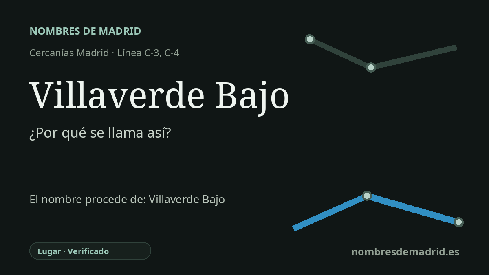

Publicado el · Investigación de Nombres de Madrid · Cómo verificamos cada origen · 7 fuentes consultadas
Respuesta rápida
Villaverde Bajo toma su nombre del topónimo local Villaverde, literalmente una 'villa verde', con Bajo como diferenciador del sector bajo o ferroviario frente a otros Villaverde. El nombre ferroviario actual data de una Real Orden de 1906, tras el anterior apartadero de Villaverde-Alicante.
La historia del nombre
La estación de Villaverde Bajo toma su nombre del topónimo local Villaverde Bajo, asociado históricamente al sector bajo y ferroviario de Villaverde. Hoy el nombre se mantiene como denominación vecinal muy reconocible alrededor de la estación, aunque el barrio administrativo formal de Madrid en esta zona es Los Rosales.
El topónimo de fondo es Villaverde. Toponomasticon Hispaniae lo interpreta como una formación latina y romance transparente a partir de villa, población o asentamiento, y viridis, verde. La lectura más plausible es la de una 'villa verde', aludiendo a vegetación, prados o tierras agrícolas productivas, aunque la misma fuente recuerda que el verde también pudo tener un valor propiciatorio en la cultura agraria medieval.
El nombre ferroviario tiene su propia cronología. El historiador ferroviario Juan Pedro Esteve Garcia documenta que el lugar se conoció como apartadero de Villaverde-Alicante tras su apertura el 1 de junio de 1893, a unos dos kilómetros del antiguo pueblo de Villaverde. Una Real Orden de 19 de julio de 1906 le dio la denominación actual de Villaverde Bajo, y no alcanzó la categoría de estación hasta el 1 de junio de 1931, cuando ya contaba con un nuevo edificio de viajeros.
Ese contexto ferroviario explica por qué el nombre pesa más que una simple referencia geográfica. Villaverde Bajo quedó integrado en el sistema ferroviario del sur, donde las rutas hacia Badajoz, Andalucía, Albacete y Cuenca compartían el acceso a Atocha, y MZA desarrolló talleres, playas de vías, viviendas y edificios de servicio. Los pabellones de viviendas de empleados que sobreviven junto a la calle Eduardo Maristany recuerdan aquel paisaje ferroviario e industrial.
La etimología actual, por tanto, está bien respaldada como topónimo de lugar, pero conviene depurar el resumen heredado. La fecha de 1861 no es la mejor documentada para este emplazamiento ferroviario; la evidencia más sólida apunta al apartadero de Villaverde-Alicante en 1893, al cambio oficial de nombre en 1906 y a la categoría de estación en 1931. Villaverde siguió siendo municipio independiente hasta su anexión a Madrid en 1954.